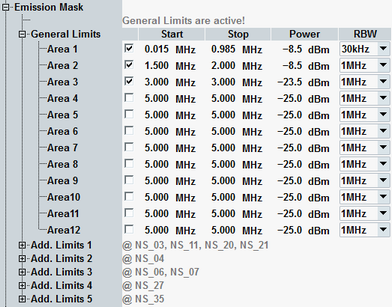

The energy, that spills outside the designated radio channel, increases the interference with adjacent channels and decreases the system capacity. The amount of unwanted off-carrier energy is assessed by the out-of-band emissions (excluding spurious emissions). They are specified in terms of the spectrum emission mask and the adjacent channel leakage power ratio (ACLR).
3GPP specifies a general spectrum emission mask and several additional spectrum emission masks. Which of the emission masks is applicable, depends on the parameter "Network Signaled Value". The masks differ for signals with and without carrier aggregation.
Both the general requirements and the additional requirements can be defined in the configuration dialog, depending on the channel bandwidth / the channel bandwidth combination. The information displayed above the general limits indicates whether the general limits are applicable, or which set of additional limits applies instead.
The following figure shows the general limits for a signal without carrier aggregation and a channel bandwidth of 1.4 MHz. For each emission mask area, you can define the borders, set an upper power limit and select the resolution bandwidth to be used. Additional limits and limits for other channel bandwidths are configured in the same way.
The start and stop frequencies of each emission mask area are defined relative to the edge of the assigned channel bandwidth. For carrier aggregation, they are defined relative to the edge of the assigned aggregated channel bandwidth.
Assume 0 MHz as start frequency and 1 MHz as stop frequency for a channel bandwidth of 1.4 MHz. The resulting area ranges from +0.7 MHz to +1.7 MHz relative to the carrier frequency. As all ranges are symmetrical, it ranges also from -0.7 MHz to -1.7 MHz relative to the carrier frequency.

The default settings are suitable to check the 3GPP requirements.